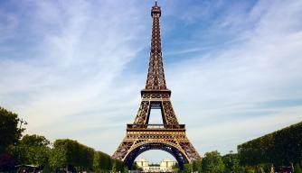
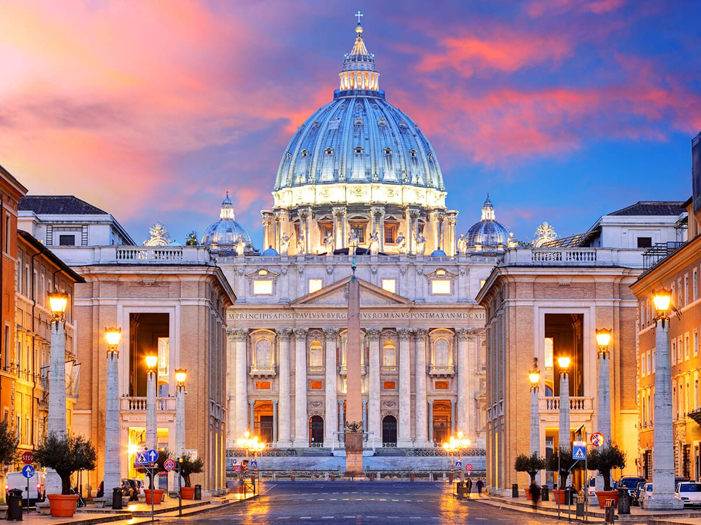
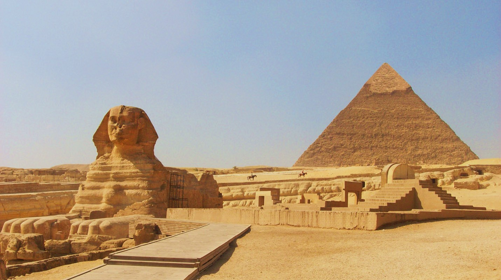
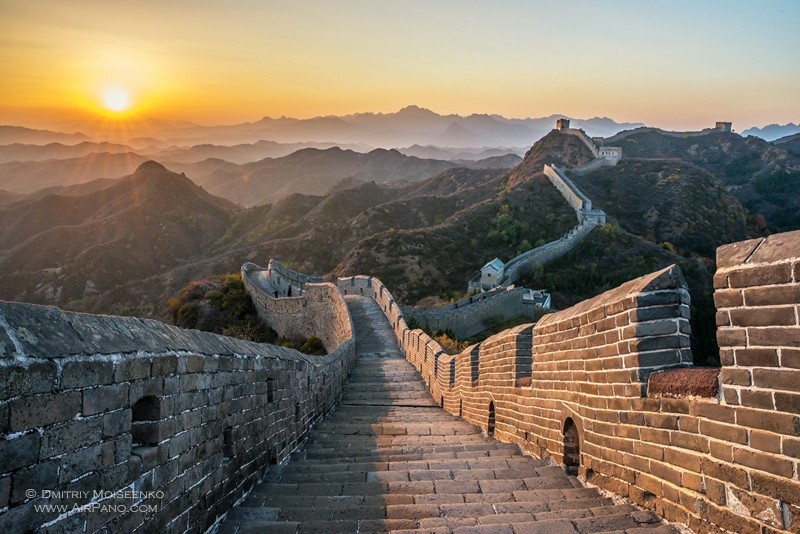

There's many places I want to visit around the world. These are just a few but they are my top 5 must visit. My journey would start off in New York at the Statue of Liberty and of course while I'm there I would tour the city. Next would be the Eiffel Tower in Paris, then the Vatican in Italy, to the great pyramids in Egypt, and lastly the Great Wall of China.
When I visit New York of course I'll visit the Statue of Liberty but when I'm there I'll also go for the food. I'll eat the famous pizza




